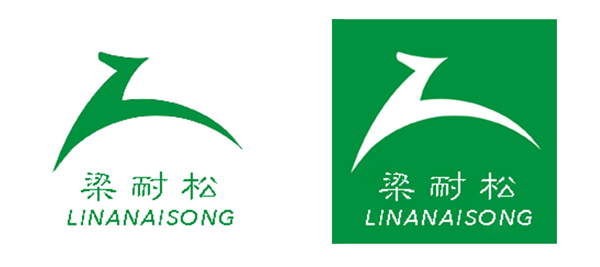

关于我们
版权所有,未经作者许可,不得以任何形式使用!
这是14软件2班梁耐松(LIANGNAISONG)的HTML+CSS期末大作业,作者年轻有活力.网站主题鲜明、内容健康、积极向上，页面布局合理、简洁大方,是作者煞费苦心的大作.然而由于作者所学颇浅,网页可能有所不足之处,敬请见谅并与我联系反馈!
关于主题:
网站以动物园为主题极其富有创造力.儿童喜欢提出新问题,而成人倾向现成的答案.希望在这个复杂的世界里,乍现一片充满童心的生机与盎然.
关于logo:

logo的设计是将梁耐松(LIANGNAISONG)的首字母L幻化成一匹马的形状,飞奔的马儿暗示着我们的飞速发展,聪慧的马儿象征着我们英明的团队(现在只要一个人,未来有无限可能),激进的马儿告诉我们不畏艰难,勇往直前,路就在脚下.